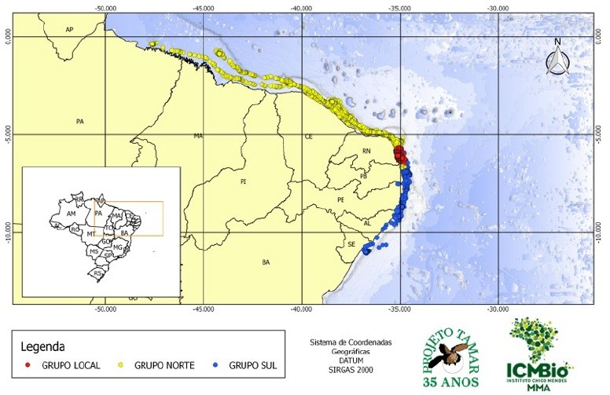

Doe para alguma ONG de proteção aos animais !


A ave, natural da bacia do Rio Paraná, pertence à família das araras e também apresenta um rabo longo e um bico marcante. As últimas pesquisas de ornitólogos foram realizadas nos anos 90 e nenhuma população da espécie foi encontrada, embora existam boatos de que ainda restam alguns exemplares nas florestas no oeste do Paraguai. A extinção aconteceu principalmente pela destruição da palmeira Butia yatay, cujos frutos eram base alimentar da espécie.
A ararajuba (Guaruba guarouba), também conhecida como Guaruba, é uma ave verde e amarela, que existe somente na Amazônia e vem sofrendo com o tráfico e o desmatamento do bioma. Pouco se sabe sobre os hábitos da ararajuba, o que dificulta a sua conservação. Atualmente, segundo o Livro Vermelho do ICMBio (2016), ela é considerada em risco vulnerável de extinção.

O soldadinho-do-araripe é a única ave endêmica (exclusiva) do Ceará (obs. pess. Weber Girão e Ciro Albano), sendo considerada uma das cinco espécies da fauna cearense mais ameaçadas de extinção global na lista oficial brasileira de 2003 (MMA/Ibama), onde é classificada como “Criticamente Em Perigo”, recebendo o mesmo status pela União Internacional para a Conservação da Natureza (BirdLife International 2004) em sua lista de espécies globalmente ameaçadas de extinção.
O Tucano-de-bico-preto vive em florestas tropicais da América do Sul. Essa linda ave está ameaçada de extinção principalmente devido à destruição de seus habitats naturais. Além disso, como são animais curiosos, são facilmente atraídos por traficantes de animais.

Atualmente é considerada extinta pela lista de espécies ameaçadas do Brasil (ICMBIO 2014), uma vez que nunca mais foi registrada na natureza. Nas últimas décadas, sua vocalização tem sido experimentada em alguns remanescentes florestais do Pernambuco (inclusive nos dois onde havia registros antigos), na tentativa de atraí-la, mas apesar de haver comportamento agonísticos de outras aves, não houve resposta. Outros autores, como Pereira et al. (2014) também apontam a provável extinção da espécie, considerando que a mesma não é registrada há mais de uma década. Visto na natureza pela última vez em 2001.


O lagarto Stenocercus dumerilii só é conhecido do Brasil, nos estados do Maranhão, Pará e Tocantins. A sua distribuição está relacionada a manchas isoladas de florestas semi-abertas.Nas últimas décadas, esses ambientes vêm perdendo espaço para agriculturas perenes, pastagens e no crescimento urbano, no Maranhão, também para plantações de eucalipto, assentamentos agrários e os impactos da expansão da Estrada de Ferro Carajás. A destruição do seu ambiente ameaça o futuro da espécie, que está ameaçada de extinção.

Tartaruga verde ,aruanã ou uruanã ,é herbívora e habita pastagens tropicais e subtropicais das bacias oceânicas do planeta. Na cidade de Trindade (ES) se destaca pelo maior sítio reprodutivo da espécie; em segundo lugar fica o Atol das Rocas (RN) seguido por Fernando de Noronha, onde tem apresentado redução drástica no número de desovas devido à exploração humana. De cada mil filhotes que nascem, somente um ou dois conseguem atingir a maturidade. 
A jararaca-de-alcatrazes é ativa durante a noite, sobretudo no chão ou na vegetação rasteira. Já durante o dia prefere repousar sobre troncos caídos, folhas de palmeiras ou em bromélias no chão. Uma de suas estratégias de alimentação é ficar sob os poleiros de aves marinhas. A razão: a presença de centopeias no ambiente, um de seus “pratos” preferidos. A principal ameaça à existência desta espécie foram os exercícios de artilharia realizados pela Marinha brasileira. Além do impacto dos projéteis, vez ou outra aconteciam incêndios de grandes proporções.

A jiboia do Ribeira, ameaçada de extinção e também conhecida como a mais rara do mundo. Entre essas nove cobras registradas, somente três foram encontradas com vida: a primeira delas em 1953, quando foi descrita por um pesquisador do Instituto Butantan, Alphonse Richard Hoge. As duas últimas, após o início das atividades de educação ambiental do Projeto Jiboia do Ribeira, em Sete Barras, São Paulo. A jiboia do Ribeira é endêmica do Vale do Ribeira, ou seja, encontrada exclusivamente na região da Mata Atlântica

A lagartixa de areia (Liolaemus lutzae) é um pequeno réptil de uns 8 cm que habita em dunas em restingas. Ela se alimenta de insetos quando jovens e apenas quatro espécies de plantas da restinga que acumulam água quando adultas. Sua reprodução ocorre uma vez só na vida e cada casal produz apenas quatro ovos, o que torna o crescimento populacional dessa espécie muito lento. A crescente ocupação urbana do litoral brasileiro tem empurrado essa lagartixa para mais perto do abismo da extinção.

O tubarão de cauda pequena(Tubarão azeiteiro) (Carcharhinus porosus) é uma espécie de tubarão réquiem e faz parte da família Carcharhinidae. É encontrada no oeste do Oceano Atlântico, desde o norte do Golfo do México até o sul do Brasil. Habita águas rasas perto da costa, particularmente em fundos lamacentos ao redor de estuários. Ele tende a nadar baixo na coluna d'água e forma grandes agregações segregadas por sexo. Uma espécie esguia geralmente não excedendo 1,1 m (3,6 pés) de comprimento, o tubarão de cauda pequena tem um focinho pontudo bastante longo, uma primeira nadadeira dorsal larga e triangular e uma segunda nadadeira dorsal que se origina no ponto médio da base da nadadeira anal. É de cor cinza liso, sem marcas proeminentes nas nadadeiras. A dieta do tubarão de cauda pequena consiste principalmente em peixes ósseos, como corvinas, enquanto crustáceos, cefalópodes e tubarões menores e raias também podem ser consumidos. É vivíparo, o que significa que os embriões em desenvolvimento são sustentados por uma conexão placentária. As fêmeas geram ninhadas de dois a nove filhotes em um ciclo bienal, após um período de gestação de aproximadamente 12 meses. O tubarão de rabo pequeno é frequentemente capturado como captura acidental e pode ser usado para carne, barbatanas, óleo de fígado, cartilagem e farinha de peixe. Parece ter diminuído significativamente desde a década de 1980. Portanto, a União Internacional para a Conservação da Natureza listou-o como criticamente ameaçado.
Distribuição geográfica Sua espécie é distribuída nas Bacias Amazônica, Araguaia-Tocantins e Prata. Habitat O Piau-Três-Pintas habita margens de rios, lagos e florestas inundadas. Alimentação É um peixe onívoro, com tendência a carnívoros (principalmente insetos) ou frugívoro (frutos e sementes pequenas), dependendo da oferta de alimentos. Reprodução É um peixe que realiza a desova total, ou Piracema, fazendo longas migrações rio acima para se reproduzir. Características O Piau-Três-Pintas é um peixe de escamas, muito importante para a pesca de subsistência e para o comércio local, mercados e feiras. Possui coloração prata, com 3 manchas escuras nos flancos. Daí o seu nome. Tem nadadeiras ligeiramente douradas e nadadeira caudal escura. Possui dentes em forma de pinça. Pode alcançar 40 cm de comprimento e 2 kg de peso.
O tubarão noturno(Tubarão toninha) ,(Carcharhinus signatus) é uma espécie de tubarão réquiem, da família Carcharhinidae, encontrado nas águas temperadas e tropicais do Oceano Atlântico. Habitante da plataforma continental externa e da encosta continental superior, este tubarão ocorre mais comumente em profundidades de 50-600 m (160-1.970 pés) e realiza uma migração vertical diária, passando o dia em águas mais profundas e movendo-se para águas mais rasas à noite . Ao largo do nordeste do Brasil, um grande número se reúne em torno de montes submarinos de profundidades variadas. Uma espécie esguia e aerodinâmica, o tubarão noturno atinge tipicamente um comprimento de 2 m (6,6 pés). Pode ser identificado pelo focinho longo e pontudo e olhos grandes e verdes (quando vivo), sendo azul acinzentado escuro ou marrom na parte superior e branco na parte inferior. Os tubarões noturnos são predadores rápidos, noturnos e ativos, que se alimentam principalmente de pequenos peixes ósseos e lulas. A reprodução é vivípara como com os outros membros de sua família; as fêmeas acasalam durante o verão e dão à luz ninhadas de geralmente 12-18 filhotes após um período de gestação de um ano. Esta espécie de águas profundas não é considerada um perigo para os humanos. É capturado incidentalmente pela pesca comercial de atum e espadarte com palangre no Atlântico ocidental, e também por uma pescaria de palangre direcionada que opera no nordeste do Brasil. O tubarão noturno é altamente valorizado por suas barbatanas e, adicionalmente, como fonte de carne, óleo de fígado e farinha de peixe. No entanto, descobriu-se que a maioria dos tubarões capturados no nordeste do Brasil contém concentrações perigosas de mercúrio. Por causa de sua baixa taxa reprodutiva e declínios historicamente documentados em áreas como o Caribe, o tubarão noturno foi avaliado como vulnerável pela American Fisheries Society. Uma avaliação populacional indicou que esta espécie está segura nas águas dos Estados Unidos, mas isso pode não ser verdade em outros lugares. Mustelus schmitti -cação-cola-fina
O tubarão-branco estreito (Mustelus schmitti) é um tubarão-cão da família Triakidae. É encontrada nas plataformas continentais do Atlântico sudoeste subtropical, do sul do Brasil ao norte da Argentina, entre as latitudes 30 ° S e 44 ° S, em profundidades entre 60 ma 195 m. Pode atingir 74 centímetros de comprimento. Os cães lisos estreitos se alimentam de caranguejos e provavelmente de outros crustáceos e, presumivelmente, de peixes pequenos. Os cães lisos estreitos também são capturados e utilizados para consumo humano. A reprodução deste houndshark é ovovivípara, com 2 a 7 filhotes por ninhada e um comprimento de nascimento de cerca de 26 cm.
Famoso peixe do Brasil, o dourado é outra espécie de peixe que figura, infelizmente, a lista dos que estão ameaçados de extinção. Pode atingir a marca de mais de 1 metro de comprimento, chegando a pesar mais de 30 quilos. Seu período de reprodução ocorre dentre os meses de novembro e fevereiro. O problema maior no caso da sua inclusão na lista de extinção não é, necessariamente, por causa da destruição de seu habitat, mas sim, por causa da pesca desenfreada desencadeada por causa do sabor do peixe, que é considerada inigualável, aliada à prática do esporte de pesca, já que o peixe é considerado difícil de ser pescado, segundo alguns esportistas. Por conta disso, para evitar que o peixe desaparecesse por completo, foi determinada a “Piracema”, que é o período de reprodução do peixe, onde fica proibida a pesca e captura desse exemplar durante os meses de sua reprodução, sob pena de reclusão e multa, sendo ela, muitas vezes, bem salgada.
<